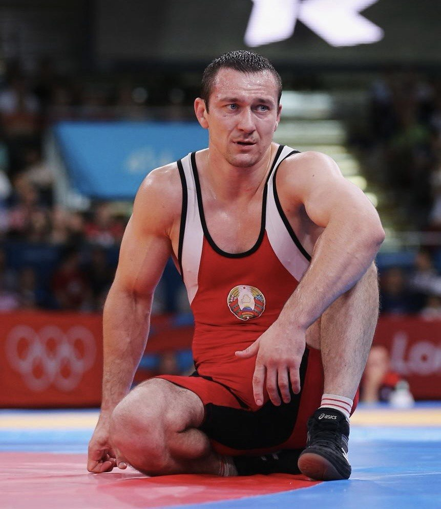

Чемпион Европы
Греко-римская борьба
Александр Фёдорович Кикинёв (род. 9 апреля 1980, деревня Мормаль Жлобинского района) — белорусский, а впоследствии и американский борец греко-римского стиля, чемпион Европы, призёр чемпионата мира, заслуженный мастер спорта Республики Беларусь, участник двух Олимпиад. Один из самых титулованных спортсменов в истории Жлобинщины.
Родился в Мормали, но когда Саше было два года, семья переехала в Жлобин. Борьбой он начал заниматься в 9 лет — привёл его отец. Через две недели после прихода в зал мальчик выиграл первенство Жлобина, обойдя соперников, которые тренировались по два-три года. Первый тренер — Г.С. Семченко. После седьмого класса Александр переехал в Гомель, в училище олимпийского резерва. Учился он на юридическом факультете БГУ. Выступал за «Динамо» (Минск), позже был капитаном сборной страны.
Главные результаты: 2003, Белград — серебро чемпионата Европы; 2004, Афины — дебют на Олимпийских играх; 2009 — бронза чемпионата Европы в Вильнюсе и бронза чемпионата мира в Хернинге; 2010, Баку — золото чемпионата Европы; 2012, Лондон — вторая Олимпиада, где он дошёл до схватки за бронзу, но остался пятым.
В 2016 году Кикинёв перебрался в США, в 2022 году получил американское гражданство. Он продолжал выходить на ковёр за океаном — в частности, становился вторым на чемпионате США. Несмотря на отъезд, на Жлобинщине Александра помнят: он числится в списке лучших спортсменов Гомельской области.